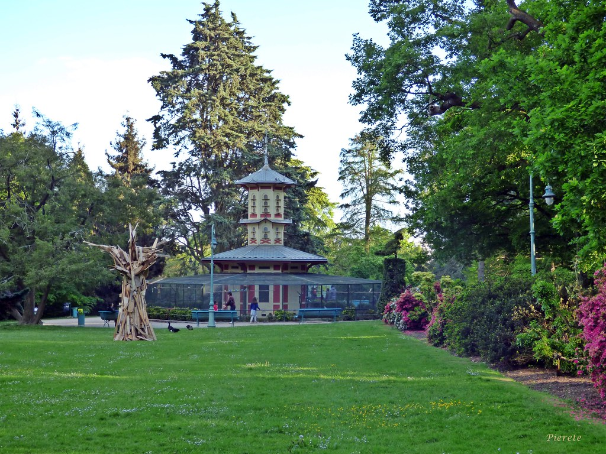

La Volière est un des points phare du parc du Thabor qui ravie petits et grands.
C’est le lieu privilégié
des
familles et des amoureux des oiseaux. La Volière a été imaginée en 1862 par l’architecte Jean Baptiste
Martenot,
elle se situe à l’ouest du parc, dans le prolongement du jardin français.
Elle est séparée en deux étages,
le
premier niveau circulaire abrite les espèces les plus exotiques et le second niveau se compose d’un
pigeonnier
qui surplombe toute la volière en son centre.
La Volière regroupe plus de 420 oiseaux dont des colombes diamant, des moineaux du Japon, des faisans, des
cailles de Chines, des perruches et des diamants mandarins.
L’entretien de La Volière est effectué par un des jardiniers animaliers du parc qui veille à les nourrir, à
nettoyer leur enclos mais également à leur bonne reproduction. Il est donc demandé aux visiteurs de ne pas
nourrir les oiseaux ou d’essayer de les toucher.
